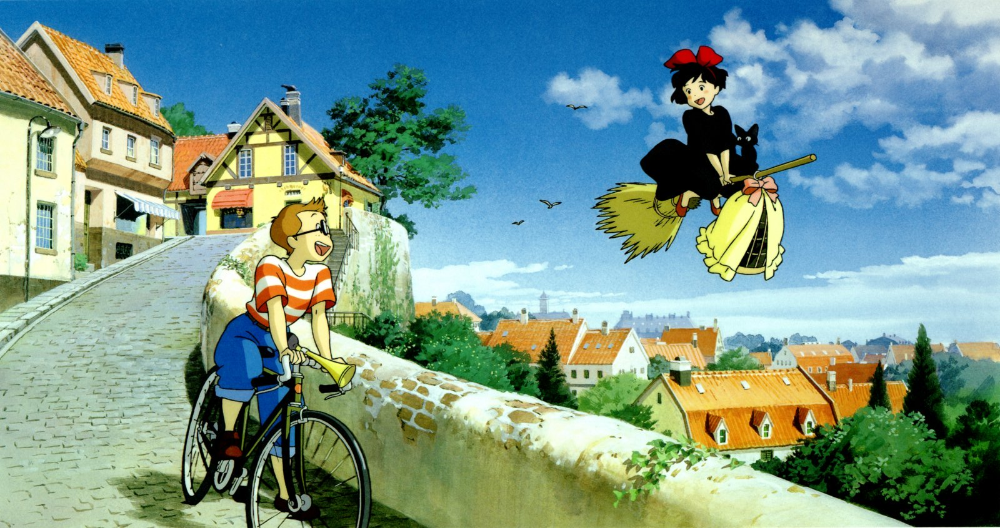
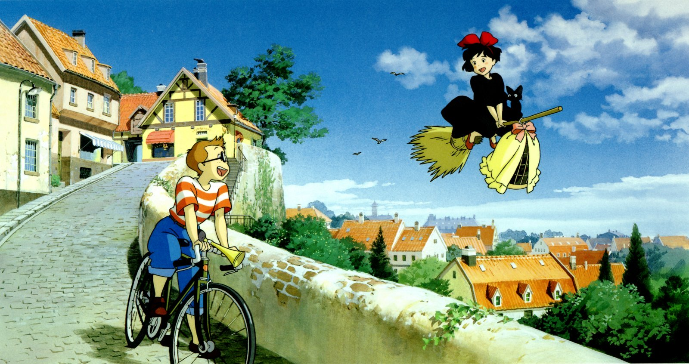

" 당신은 지브리 스튜디오의 어떤 영화를 좋아하세요? "
#이웃집 토토로 #하울의 움직이는 성 #센과 치히로의 행방불명 #벼랑 위의 포뇨
※본 웹사이트는 Crome에 최적화 되어 있습니다.
 

▲ 화살표를 누르면 이미지가 넘어갑니다.
" 당신은 지브리 스튜디오의 어떤 영화를 좋아하세요? "
#이웃집 토토로 #하울의 움직이는 성 #센과 치히로의 행방불명 #벼랑 위의 포뇨